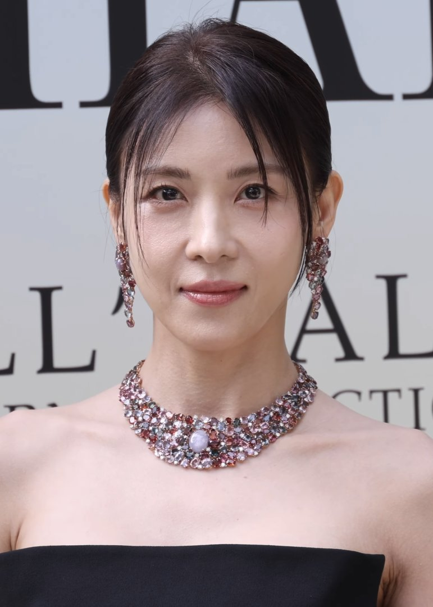
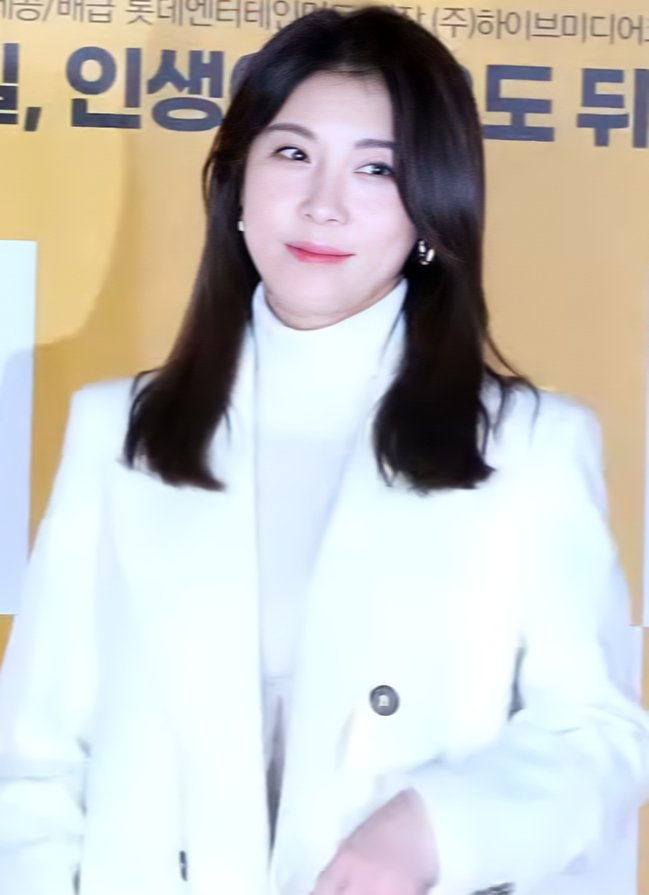

"옆 테이블에 하지원이랑 성시경 둘이 밥 먹고 있음." 11월 4일 하루 동안 여러 매체가 이 목격담을 기사로 냈어요. 하지원 성시경 두 사람이 단둘이 식당에 있었다는 이야기였죠. 그런데 이 문장, 출처를 따라가면 하지원의 유튜브 채널에 닿아요.
📷 사진 1 자리
▲ 사진: 티비텐 / CC BY 3.0 / 위키미디어 공용
목격담의 출발은 채널 예고 영상
하지원은 유튜브 채널 '26학번 지원이요'를 운영하고 있어요. 이 채널에 11월 3일 올라온 짧은 영상의 제목이 바로 "옆 테이블에 하지원이랑 성시경 둘이 밥 먹고 있음"이었어요.
▶ 영상 1 자리
다음 날 기사 제목들도 같은 말을 썼어요. '옆 테이블서 밥 먹어', '을지로 목격담 알고 보니', 제목 끝에 '(26학번 지원이요)'를 붙인 기사까지 나왔고요. 목격담처럼 보였던 장면은 채널이 먼저 올린 예고였던 셈이에요.
11월 5일 공개된 32화, 무슨 이야기가 나왔나
본편은 11월 5일 32화로 올라왔어요. 제목은 '살면서 이런 사람 한 명쯤 필요하지 않나요? 지원이가 해림이가 되어 성시경과 나눈 진솔 토크'예요.
▶ 영상 2 자리
시작은 호칭이었어요. 성시경은 지난번 술자리에서 누나·동생으로 말을 놓기로 했는데 하지원이 들어오자마자 존댓말을 해서 "이거 힘들다" 싶었다고 털어놨어요. 1978년생 하지원이 "우리 한 살 차이인가" 묻자, 성시경은 1979년 4월생이라며 편하게 하자고 답했죠. 웃다가 하지원이 성시경의 팔을 치자 "남자들 속는다, 위험한 버릇"이라는 농담도 나왔어요.
하지원의 20대 이야기도 이어졌어요. 19살에 데뷔해 촬영장과 집만 오가느라 또래들이 가는 술집을 거의 못 갔고, 술은 30살이 넘어서 처음 마셨다고 해요. 하지원은 그 시기를 "인생에서 삭제된 구간"이라고 표현했어요.
📷 사진 2 자리
▲ 사진: 티비텐 TV10 / CC BY 3.0 / 위키미디어 공용
하지원은 이 채널의 마지막 데이트 상대로 성시경을 골랐다고 밝혔어요. 영상 끝에서 두 사람이 나눈 건 앞으로 편하게 연락하자는 약속이었고, 하지원은 "전화할 사람이 또 생긴 것 같다"고 했어요.
같은 주, 이서진과 '다모' 재현도
하지원은 같은 주 SBS '비서진'에도 나왔어요. 이서진과 23년 만에 '다모'의 "아프냐, 나도 아프다" 장면을 다시 해 보이며 11월 5일 여러 매체에 이름이 올랐어요. 한 주 동안 유튜브와 방송 양쪽에서 근황이 이어진 거예요.
정리해 보니 이번 목격담은 '우연히 찍힌 장면'이 아니라 채널이 먼저 던진 예고였다는 게 가장 흥미로웠어요. 제목 한 줄이 기사 여러 건으로 번진 걸 보면, 연예인 유튜브 예고편이 요즘 홍보 방식으로 꽤 잘 통한다는 걸 보여 주는 사례 같아요. 두 사람 대화가 궁금했다면 기사보다 32화 본편을 보는 쪽이 훨씬 자세해요.
하지원 성시경 식당 목격담은 하지원의 채널 '26학번 지원이요'의 예고 영상에서 시작됐고, 본편은 32화로 공개돼 있어요. 채널은 유튜브에서 '26학번 지원이요'로 찾으면 돼요.

